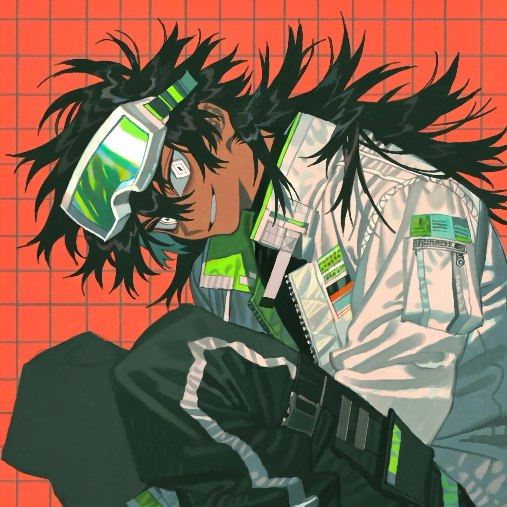

CHARACTER RECORD / 014STATUS: AVAILABLE

✦IMAGE
NOT FOUND
NOT FOUND
ネリオ
✦ WITH OUTFIT
服装込み
PROMPT DATATXT / 014
1boy, dark skin, lean build, sharp jawline, 1.2::white sclera::, 1.3::diamond-shaped pupils::, reddish-brown eyes, dark eye bags, mischievous smirk, 1.2::long black hair::, messy bangs, long flowing hair, dark green hair highlights,
1.2::oversized reflective ski goggles::, iridescent lenses, pink and cyan reflections, futuristic techwear, oversized white jacket, high collar, black tactical clothing, utility straps, harness, buckles, chest pockets, geometric patches, 1.2::neon green accents::, reflective stripes, black cargo pants, fingerless gloves, chunky white sneakers, futuristic streetwear,